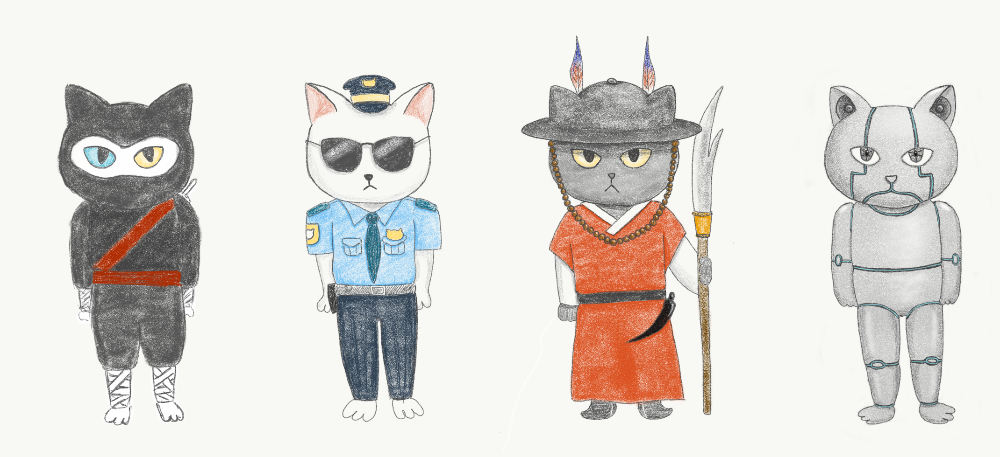

Jenny Hyun Ji Seong
Art. Design. Code.
Sophisticats
Designer and Android Developer, November 2017
SophistiCats is an Android game that was developed by me along with Ben Packer and Xander Kushen. We had been working on a cat-themed application when we were taking an Android development class together, and wanted to take the concept to another level. Thus began our journey to create a cat-themed game.
Concept
In the class, we learned how to make a location-based project that resembled Pokemon Go except that you were petting cats instead of catching Pokemon. We decided to take a twist on this idea and create a game in which you can play as a cat.
After some really fun brainstorming sessions, looking at cat videos online, stumbled upon the Disney movie Aristocats. And then a thought stuck us: what if you’re a poor cat trying to become a rich cat? You have to go around, collecting some kind of money, and slowly make your way up. It’s the perfect combination of the famous Princess Maker series and, well, **cats**.
SophistiCats is a game about alley cats turning into sophisticated cats. Around the world, random locations generate catnip deposits. Once you approach the deposit, a guard cat will test you to prove you are worthy of the goods. Your goal is to visit as many deposits as possible and collect catnip that can be traded for items that will make you classier.
{kind=link}
Gameplay
{kind=link}
When you start the game, you choose a "base" cat—one that is bare with no clothing items equipped. You will be able to collect "catnip," the cat currency, by going around the world in person with GPS. Once you arrive at a catnip spawning location, a SecuriCat will test your knowledge to see if you are worthy of acquiring the catnip. If you get the right answer, you will collect catnip. You can use the catnip to jazz yourself up!
{kind=link}
I had a lot of fun with this project, spending time to draw digitally and check out new tools such as Lottie. A lot of the app was focused on delight, such as a spinning cat loader, because we wanted the game to be fun and playful.
Interested in other game projects?
Check out these pages!